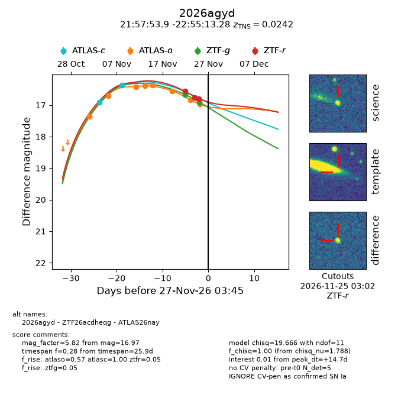
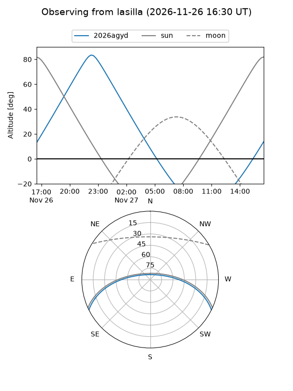
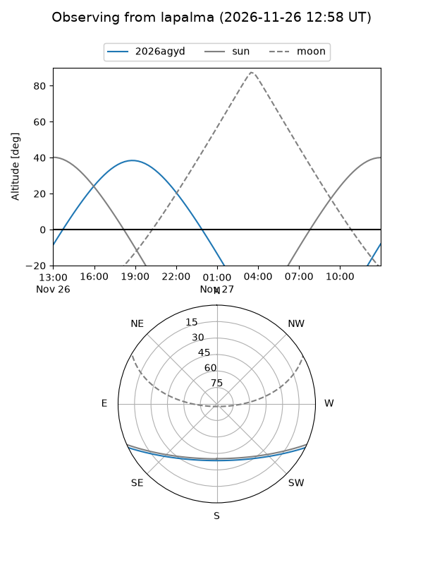
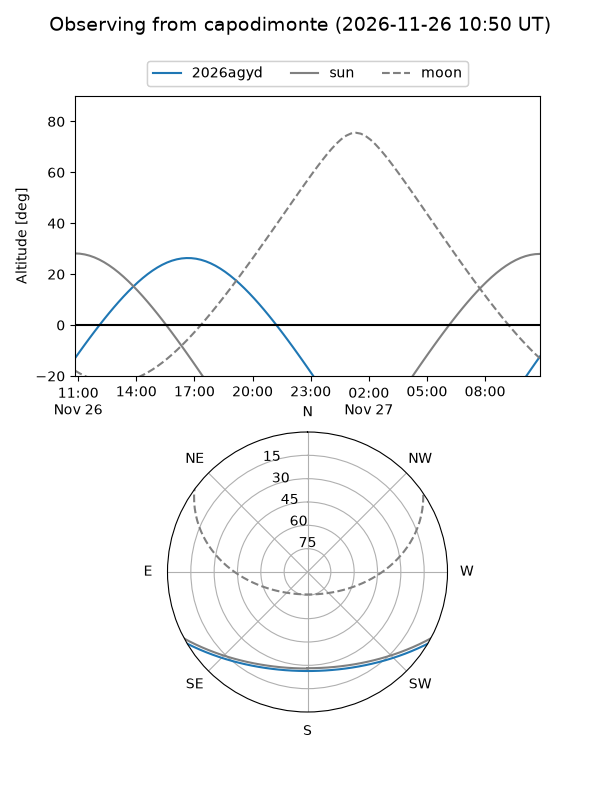
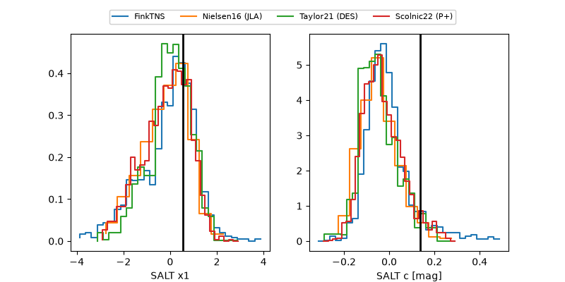

2026agyd
Target 2026agyd at 2026-11-27 03:46
Aliases and brokers:
FINK-ZTF: ztf.fink-portal.org/ZTF26acdheqg
Lasair-ZTF: lasair-ztf.lsst.ac.uk/objects/ZTF26acdheqg
ALeRCE-ZTF: alerce.online/object/ZTF26acdheqg
YSE-PZ: ziggy.ucolick.org/yse/transient_detail/2026agyd
TNS name: wis-tns.org/object/2026agyd
Direct TNS query: direct search
alt names
ZTF26acdheqg (ztf,fink_ztf)
2026agyd (tns,yse)
ATLAS26nay (atlas)
Coordinates:
equatorial (ra, dec) = 329.4746,-22.92036
equatorial (HMS+DMS) = 21:57:53.91,-22:55:13.28
galactic (l, b) = (29.1896,-50.65302)
Flags:
TNS type: SN Ia
TNS redshift: 0.0242
peak dt: +14.7
Photometry:
last atlasc=16.37, atlaso=16.97, ztfg=16.91, ztfr=16.81
2 atlasc, 8 atlaso, 2 ztfg, 3 ztfr detections
Lightcurve

Visibility



Additional plots
